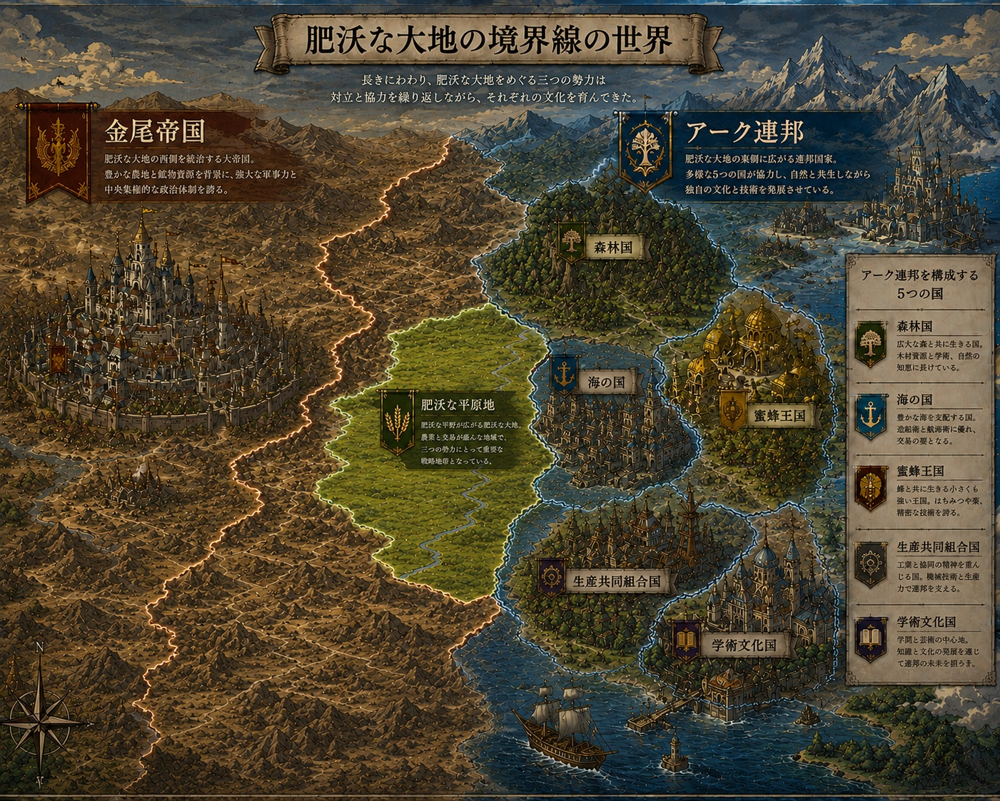
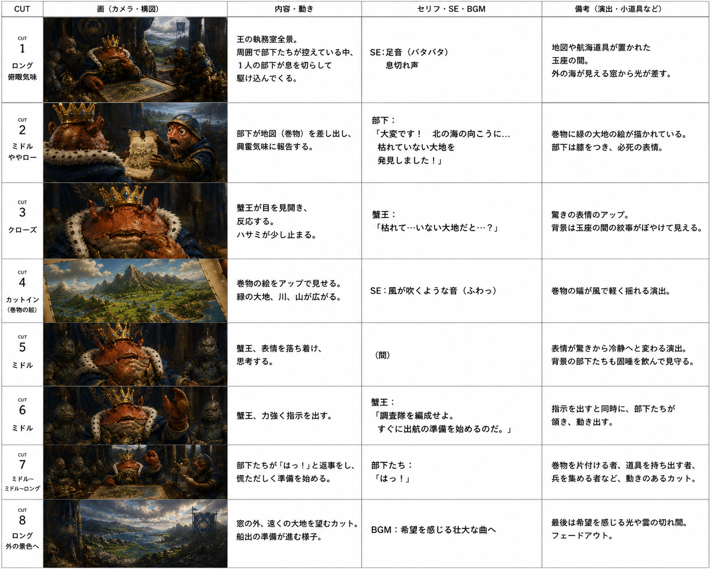

自己紹介
これまで接客、調理補助、介護、食品工場と、業種の異なるさまざまな現場で働いてきました。一見バラバラに見えるかもしれませんが、どの仕事でも大切にしてきたことは共通しています。それは「決められた時間の中で、周囲を見ながら動くこと」です。
現在はこの経験を土台に、ライティングやAIを活用したコンテンツ制作にも取り組んでいます。
飲食店 スタッフ
来客対応や注文管理を担当。予約状況や店内の混雑具合を見ながら、料理の提供タイミングを調整していました。
病院 厨房スタッフ
入院患者様への食事づくりを担当。刻み食やミキサー食など、一人ひとりの状態に応じた対応も行いました。
高齢者施設 スタッフ
日常生活のサポートや見守りを担当。利用者様お一人おひとりのペースに合わせた対応を心がけていました。
食品製造ライン スタッフ
加工・検品などのライン作業に従事。決められた工程を時間内に、正確にこなすことを意識していました。
段取り力
決められた時間内に作業が終わるように、順番や時間配分を考えて組み立てることが得意です。文章や制作物の締め切りを守ることにも活きています。
状況把握力
自分の作業だけでなく、周囲の状況を見て動き方を調整します。読み手や依頼者の意図を汲み取りながら制作を進める姿勢につながっています。
制作サンプル
生成AIを活用した営業マンガ制作
ある技術の仕組みをわかりやすく伝えるための営業マンガを、企画から仕上げまで一人で制作しました。資料整理・プロット作成・コマ割り・AIによる作画・確認と修正まで、一連の流れを自分で組み立てて進めています(提案用に制作したサンプルで、案件としての受注実績ではありません)。
※ 技術的な内容はクライアント由来の情報を含むため、具体的な詳細は伏せています。
オリジナル世界観設定資料
生成AIを使い、架空世界の勢力図と設定をビジュアル化したサンプルです。文章設定を、ひと目で伝わる一枚絵にまとめました。

AI画像による絵コンテサンプル
ストーリーの流れをカットごとに整理し、生成AI画像とあわせて絵コンテの形にまとめたサンプルです。カメラワークやセリフ、演出メモまで構成しています。

お問い合わせ
ライティングやコンテンツ制作のご依頼・ご相談は、下記メールアドレスまでお気軽にご連絡ください。